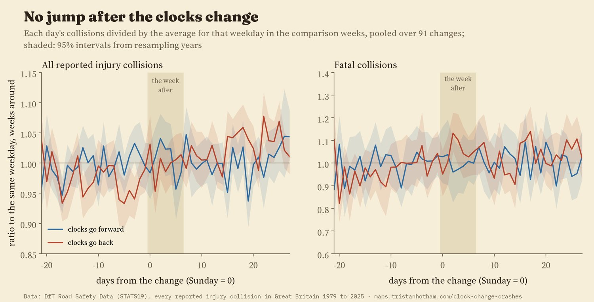
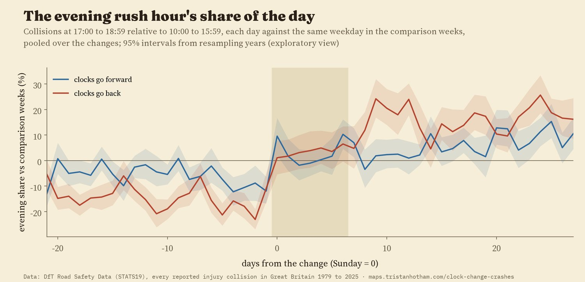
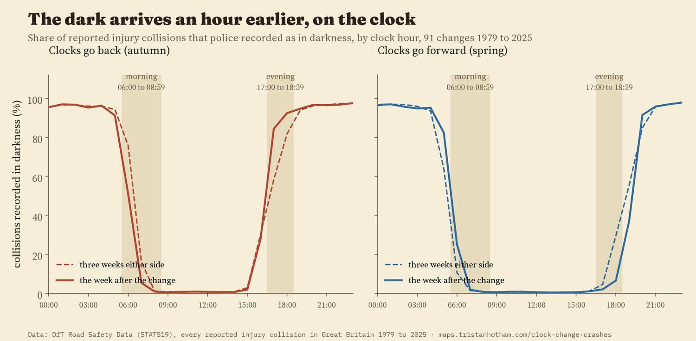
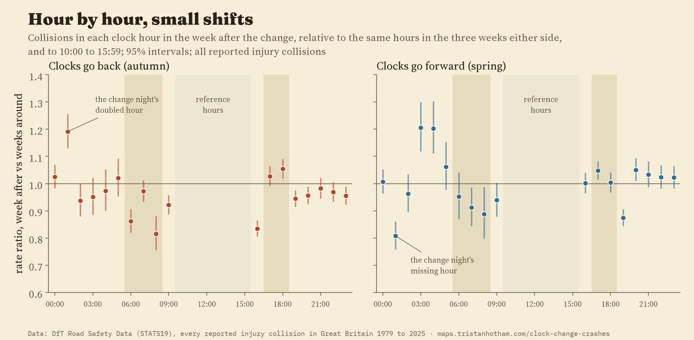
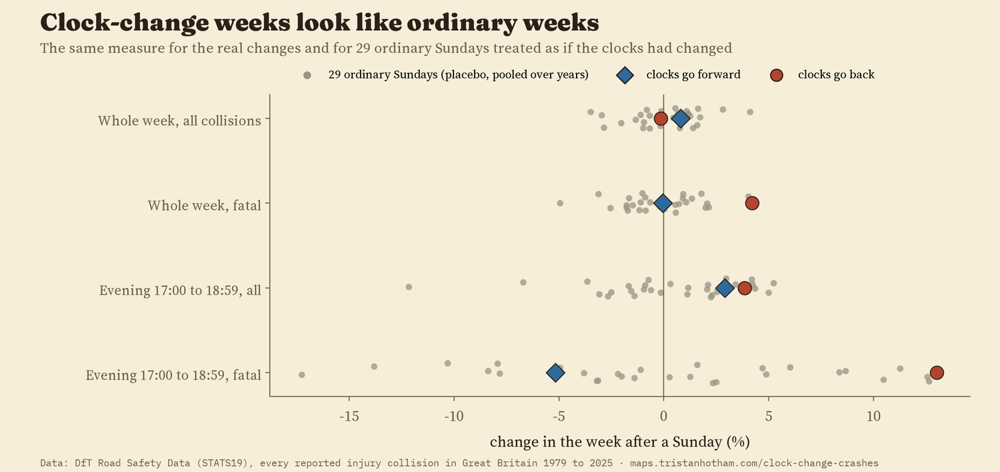
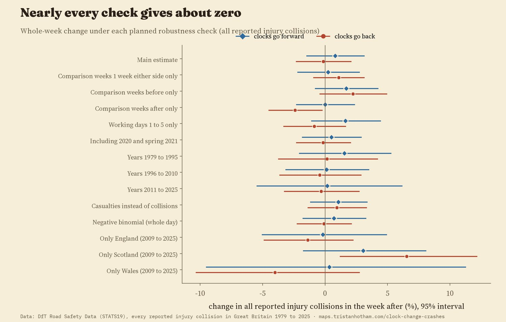

Reported injury road collisions in the week after each clock change, compared with the same weekdays three weeks either side. Great Britain, 9,116,617 collisions, 1979 to 2025. The map shows each district from 2009 to 2025: mostly noise. Tap a district.
Twice a year the clocks change, and twice a year someone warns that the roads are about to get more dangerous. In spring we lose an hour of sleep. In autumn the dark arrives in the middle of the drive home. I wanted to know whether the crashes actually follow, so I took every injury collision reported to the police in Great Britain since 1979 and compared the week after each clock change with the weeks around it.
For each change I compared the seven days from the Sunday of the change with the same weekdays one, two and three weeks before and after. Putting the comparison weeks on both sides cancels the steady seasonal drift in traffic and daylight. In the week after the clocks go forward, reported collisions changed by 0.8% (95% interval -1.5 to 3.1). In the week after they go back, by -0.1% (-2.3 to 2.1). Both are zero within the noise, and the intervals rule out rises of more than about 3%.

Each day against the same weekday in the weeks around it, pooled over 91 changes.
Fatal collisions are the one place a hint shows up. In the week after the clocks go back they were 4.2% higher, but the interval runs from -0.3% to 8.9%, and when I ran the same test on ordinary Sundays, 2 of 29 gave an estimate as large. After the clocks go forward, fatal collisions changed by 0.0%.
The light really does move. In the weeks around the autumn change, 68% of collisions between 17:00 and 18:59 happened in the dark. In the week after it, 88%. Yet collisions in those two hours rose only 3.9% compared with the middle of the day, and in spring, when those hours get lighter, they rose too (2.9%). The chart shows every hour of every day around the change: pick a season and hover or tap a cell.
One pattern does stand out, though I did not plan to look for it. The evening rush hour's share of collisions steps up on the day the clocks go back and keeps climbing for weeks. Against only the three weeks before, the autumn evening rise is 19.5%, bigger than any ordinary week produces. But the same step appears in spring, when evenings get lighter, so darkness cannot be the whole story.

Exploratory: the evening hours' share of each day's collisions, against the same weekday in the comparison weeks.

Share of collisions police recorded in darkness, by clock hour.

Each hour in the week after the change, against the weeks around it and against 10:00 to 15:59.
To see how big an effect ordinary weeks produce, I pretended the clocks had changed on other Sundays: 29 weeks of the year, pooled over the years. The real changes sit among them. Ordinary Sundays move the week's collisions by up to about 4% either way, and shift collisions between hours by at least as much as the autumn evening rise in 7 of 29 cases, because half-terms, bank holidays and school holidays change when people travel. Outside the nation splits, every planned check, from different comparison weeks to separate decades, kept the whole week within about 3% of zero. Three intervals excluded zero: a small autumn fall when comparing only with later weeks, a spring rise of 3.0% when springs with Easter in the change week are left out, and Scotland, where the week after the clocks go back had 6.5% more collisions from 2009 to 2025 (one of fourteen nation-level results, and not predicted).

The real changes against ordinary Sundays.

Every planned check.
The map tells the same story locally. From 2009 to 2025, 19 of 349 districts had a change after the autumn switch whose interval excludes zero. Chance alone would give about 17.
Data. The Department for Transport publishes every personal-injury road collision reported to the police in Great Britain, with the date, the clock time, the severity and whether it was light or dark. I reduced the 9,116,617 records to counts by day, hour, severity and light. Damage-only crashes and injuries never reported to the police are not in it.
The plan. I wrote down the comparison, the hour groups, the exclusions and the checks before computing any count around a clock change. The changes of spring 2020, autumn 2020 and spring 2021 were left out in advance because lockdown rules started or ended inside their windows. Within each day, a statistical model with a term for every calendar day compares only how the day's collisions are spread across the hours, which removes weather and holidays.
What this cannot say. This is the short-run effect of the change itself. It says nothing about whether permanently lighter winter evenings would be safer, which is a different question with different evidence. It counts collisions, not risk: if people walk and cycle more on light evenings, more collisions in those hours might mean more people out. And the October half-term often falls in the week after the clocks go back, which moves the school run.